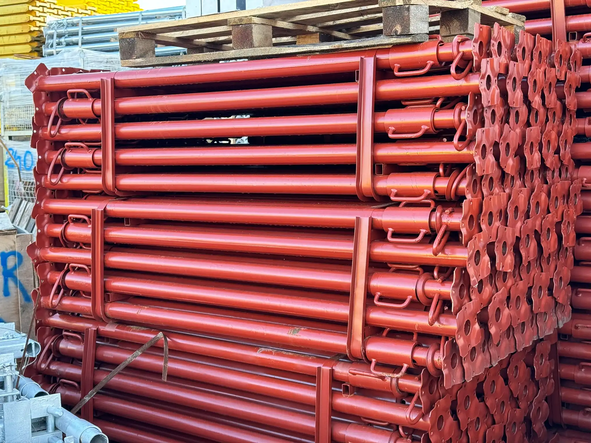

01
Szalowanie stropów
Stemple budowlane wykorzystywane są do tymczasowego podparcia szalunków stropowych w trakcie betonowania, aż do momentu, gdy beton stwardnieje.

Podpora stropowa, powszechnie nazywana stemplem budowlanym, to tymczasowy, regulowany element konstrukcyjny, którego zadaniem jest przenoszenie obciążeń ze świeżo wylanego stropu (lub innych elementów żelbetowych) na stabilne podłoże. Stosuje się ją wszędzie tam, gdzie beton musi uzyskać odpowiednią wytrzymałość, zanim będzie mógł samodzielnie przenosić obciążenia. W praktyce stemple budowlane są niezbędne przy wykonywaniu stropów monolitycznych, podciągów, nadproży, balkonów, a także przy montażu prefabrykowanych elementów żelbetowych.
Stemple budowlane wykorzystywane są do tymczasowego podparcia szalunków stropowych w trakcie betonowania, aż do momentu, gdy beton stwardnieje.
Stosowane w budynkach w trakcie wykonywania stropów lub przy innych pracach, gdzie konieczne jest chwilowe wsparcie konstrukcji.
W trakcie modernizacji budynków, stempel może być używany do podparcia elementów stropowych lub sufitowych podczas prac budowlanych.